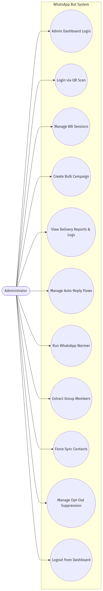

Bab 1: Inisiasi & Perencanaan Proyek (Project Initiation & Planning)
1.1 Project Overview & Business Value #
Platform otomatisasi komunikasi berbasis web (headless browser bypass) yang dirancang untuk mengelola multisesi WhatsApp secara konkuren tanpa batasan device fisik, mengurangi overhead perangkat keras hingga 90%, dan meningkatkan kapabilitas penyebaran informasi organik (Bulk Messaging).
Forward Roadmap to VPS Deployment #
Roadmap ini menjadi acuan resmi pekerjaan lanjutan sebelum aplikasi dipublikasikan di VPS. Baseline admin authentication, process architecture, database migration versioned, media upload, session stability, lightweight Telegram alert monitoring staging, offsite backup Telegram, browser feature smoke socket-heavy, dan frontend production API URL guard sudah tersedia, namun sistem belum boleh dinyatakan production-ready sampai keputusan hardening produksi dan platform governance tersisa tercatat pada kandidat rilis.
| Urutan | Prioritas | Area | Status | Sudah Ada | Belum / Next Step | Acceptance Criteria |
|---|---|---|---|---|---|---|
| 1 | P0 |
Admin authentication | PARTIAL | Login admin server-side memakai cookie HttpOnly ketika WA_BOT_ADMIN_PASSWORD dikonfigurasi; WA_BOT_API_KEY tidak ditanam di frontend; logout UI tersedia; staging HTTPS memakai secure cookie dan CORS domain staging. |
Pastikan secret admin/session kuat, lakukan browser smoke login/logout HTTPS, dan/atau tambahkan reverse proxy auth bila dibutuhkan. | Browser publik tidak dapat mengakses /api/* tanpa identitas admin; cookie secure aktif di HTTPS; backend tidak diekspos langsung. |
| 2 | P0 |
Process architecture | DONE | Runtime role split tersedia untuk api, sessions, campaign-worker, warmer-worker, dan worker; campaign/warmer worker polling DB; internal session-manager API dan readiness endpoint tersedia; delegasi Group Grabber, Single Message, group contact verification, campaign processing nudge, dan warmer start/stop timer control tersedia saat WA_BOT_SESSION_MANAGER_URL aktif. Readiness staging setelah deploy lulus: API ready dan worker ready dengan 3 active sessions. Browser feature smoke staging PASS pada 2026-06-07. |
Pertahankan split API/worker ini dan ulangi smoke browser untuk release candidate berikutnya. | Restart API tidak menghentikan sesi/worker; API-only dapat mendelegasikan operasi socket ke proses internal; tiap proses punya readiness check dan log sendiri; fitur socket-heavy terbukti berjalan dari browser staging. |
| 3 | P0 |
Database migration | DONE | database.js menjalankan migration runner; backend/src/migrations/index.js berisi migration versioned; tabel schema_migrations tersedia; npm run db:migrate membuat backup sebelum migrasi. |
Tambahkan migration baru untuk setiap perubahan skema berikutnya; jangan menambah CREATE TABLE/ALTER TABLE inline baru di database.js. |
Ada migrasi versi yang dapat dijalankan ulang aman; perubahan skema tidak lagi tersebar inline; backup dibuat sebelum migrasi. |
| 4 | P0 |
Backup and restore | DONE | Script backup runtime data, backup otomatis sebelum npm run db:migrate, encrypted backup AES-256-GCM (npm run backup:encrypted), restore drill non-destruktif (npm run restore:drill), command sheet docs/deploy/BACKUP_SCHEDULE.commands.md, systemd backup/restore timers aktif di staging VPS, dan offsite backup otomatis via Telegram. |
Review backup freshness, Telegram delivery, storage retention, dan apakah perlu destinasi offsite kedua untuk production. | Restore drill tercatat berhasil; backup terenkripsi dan offsite Telegram aktif; backup tidak berada di webroot dan aksesnya terbatas. |
| 5 | P0 |
VPS monitoring | DONE untuk lightweight staging baseline | /health, /health/ready, /internal/health/ready, template monitoring docs/MONITORING.md, command sheet docs/deploy/MONITORING_SETUP.commands.md, lightweight Telegram alert baseline npm run monitor:alert, readiness API/worker staging, UFW evidence, backup freshness baseline, wa-bot-healthcheck.timer, dan wa-bot-alertcheck.timer tersedia. Healthy timer run dan forced API readiness alert sudah tercatat. |
Opsional: tambahkan Uptime Kuma/Netdata untuk CPU/RAM dan perluas alert sesi/campaign bila traffic production nyata dimulai. | Alert aktif untuk endpoint health/readiness, disk hampir penuh, proses mati, sesi WhatsApp putus, dan campaign terlalu lama. |
| 6 | P1 |
Database reliability | DONE | Index penting, PRAGMA foreign_keys = ON, SQLite WAL mode aktif, retensi delivery_logs, warmer_logs, berkas ekspor, dan folder backups otomatis dipangkas oleh script prune_delivery_logs.js. Unit test prune.test.js lulus 100%. |
Review normalisasi field string/JSON besar secara berkala. | Query utama lebih cepat; integritas foreign key aktif; retensi log terdokumentasi dan dapat diuji. |
| 7 | P1 |
Codebase quality | DONE | Central config, Pino logger, http_response helper, central frontend API client (seluruh komponen UI React telah dimigrasi penuh ke apiRequest), 15 backend controllers & routes migrasi penuh, validator middleware. |
Tambahkan request validation schema baru bila ada API baru. | Environment dibaca dari satu modul; log dapat dipantau; payload invalid ditolak konsisten. |
| 8 | P1 |
Security hardening | DONE | CORS, rate limit, cookie, API key, AES-GCM Chatbot AI, internal token, security headers, size policy, masking, CSP tuned (Google Fonts & websocket staging/produksi allowed), multi-process rate limiter & filesystem ACL review. | Review berkala kebijakan sandbox OS dan firewall. | Security checklist di docs/SECURITY.md dapat dipenuhi untuk kandidat rilis. |
| 9 | P1 |
Deploy automation | DONE | docs/deploy/ berisi PM2, systemd, Caddy, logrotate, env; staging VPS domain HTTPS, secure cookie/CORS, UFW, backup/restore/healthcheck/alertcheck timers, HTTP/HTTPS/auth smoke verified; build guard frontend active. Skrip smoke test otomatis tersedia di backend/scripts/deploy_smoke_test.js. |
Integrasikan ke pipeline CI/CD jika diperlukan. | VPS baru dapat disiapkan dari template tanpa membuka port backend langsung ke internet; smoke test berhasil; build frontend gagal jika bundle mengekspos :3001/api. |
| 10 | P2 |
Test coverage | DONE | QA browser, build frontend, OpenAPI parity, smoke test internal delegation, 54 test cases backend integration & unit test suite (validator, auth, templates, opt-outs, chatbot flows session isolation, single-message delegation, spintax engine, dan log/file pruner), serta automated deploy smoke test 100% lulus. | - | CI/manual release dapat menjalankan test cepat tanpa Puppeteer dan test end-to-end saat kandidat rilis. |
| 11 | P2 |
Platform governance | TODO | Risiko Baileys sudah dicatat di compliance section. | Evaluasi Baileys vs WhatsApp Business Platform resmi; tetapkan batas penggunaan bulk/warmup dan consent policy operasional. | Keputusan platform dan batas penggunaan bulk/warmup terdokumentasi sebelum operasi produksi. |
| 12 | P2 |
Media upload attachments | DONE | Backend upload controller/routes/service (`multer`), frontend reusable upload component (`MediaUploadField`), dan integrasi ke Templates, Single Message, serta Chatbot Flow telah selesai diimplementasikan, dibuild, dan diverifikasi. | - | Admin dapat upload gambar <= 5 MB dan video <= 10 MB dari UI; file runtime tidak masuk git; pesan media terkirim memakai file upload lokal. |
| 13 | P0 |
Session stability & log noise | DONE | Auto-repair loop dinonaktifkan untuk mencegah loop koneksi ulang tak berujung akibat error dekripsi riwayat lama, dan log libsignal disaring secara global. | - | Negosiasi ulang kualitatif hanya dapat dipicu secara manual; tidak ada log spam libsignal di terminal. |
| 14 | P1 |
Chatbot Flow large-data UX & metrics | DONE | Import body limit 60 MB, progress import/export, export response validation, lightweight list/detail/settings endpoints, UI tabel ringkas dengan Sent per-flow serta agregat Triggered/Failed di kartu laporan, dan counter Triggered/Sent/Failed lewat migration 006. |
Pertahankan smoke import/export/edit/settings/nodes/media/counter pada setiap release candidate. Full export bisa besar karena membawa semua nodes. | Flow besar lebih ringan diedit, metrik sent menghitung pesan node yang benar-benar terkirim, dan export tidak menyimpan file null saat response invalid. |
1.2 Risk Assessment Matrix #
Penilaian risiko berdasarkan standar operasional proyek perangkat lunak. Skor = Probabilitas x Dampak.
| ID | Kategori | Deskripsi | Prob. | Dampak | Skor | Strategi Mitigasi |
|---|---|---|---|---|---|---|
RSK-01 |
Eksternal (Vendor) | Meta memblokir nomor WA karena deteksi spam. | 4 | 5 | 20 | Terapkan algoritma Random Delay & Jeda Istirahat antar-50 pesan. |
RSK-02 |
Infrastruktur | Kebocoran memori (Memory Leak) dari koneksi WebSocket aktif. | 3 | 4 | 12 | Garbage collection tuning & PM2 auto-restart jika RAM > 200MB. |
RSK-03 |
Sekuritas | Pencurian Kredensial Auth State. | 2 | 5 | 10 | Enkripsi folder session dan penguncian akses filesystem. |
RSK-04 |
Konektivitas | WebSocket Timeout atau Disconnect. | 4 | 3 | 12 | Modul Auto-Reconnect dengan Exponential Backoff. |
Bab 2: Analisis Kebutuhan Perangkat Lunak (SRS ISO/IEC/IEEE 29148)
2.1 Functional Requirements Table (SRS) #
| Req ID | Fitur | Deskripsi Kebutuhan | Prioritas |
|---|---|---|---|
FR-01 |
QR Generation | Sistem merender QR Code Base64 via WSS untuk menautkan perangkat. | Tinggi |
FR-02 |
Multi-Session | Sistem menyimpan dan mengelola lebih dari 1 file otorisasi sesi secara independen. | Tinggi |
FR-03 |
Bulk Engine | Sistem mengeksekusi antrean pesan dari Array nomor telepon tanpa blocking proses lain. | Tinggi |
FR-04 |
Sync Contacts | Sinkronisasi status keterkiriman (Centang 1, Centang 2) ke Database. | Sedang |
FR-05 |
Dashboard | Visualisasi jumlah pesan Sent, Pending, Failed dalam bentuk grafik/angka. | Tinggi |
FR-06 |
Auto-Reply Flow | Sistem dapat membalas pesan secara otomatis dengan alur interaktif (pilihan jawaban prasetel, media gambar, video, audio, dan template). | Tinggi |
FR-07 |
Flow Import/Export | Sistem dapat mengekspor dan mengimpor alur chatbot dalam format berkas JSON terstandar. | Tinggi |
FR-08 |
Real-Time UI Sort/Search | Pencarian dan pengurutan dinamis daftar alur berdasarkan Nama Alur dan Nomor WhatsApp. | Sedang |
FR-09 |
Campaign Name Persistence | Sistem mendukung dan menyimpan nama kampanye kustom secara persisten untuk kemudahan identifikasi di dashboard. | Tinggi |
FR-10 |
Advanced Personalization | Sistem mengurai tag personalisasi {{name}} dengan opsi modifier (first, proper/title, upper/caps, lower) dan teks cadangan (fallback). |
Tinggi |
FR-11 |
Time-based Greetings | Sistem mengurai tag sapaan waktu otomatis ({{greeting}} / {{greeting|formal}}) berbasis waktu server secara dinamis. |
Sedang |
FR-12 |
Non-blocking Progress UI | Sistem menampilkan perkembangan kampanye via kartu horizontal dan panel samping (slide-over drawer) real-time secara asinkron. | Tinggi |
FR-13 |
WhatsApp Account Warmer | Sistem mendukung simulasi percakapan otomatis dua arah antar-perangkat terhubung untuk memanaskan reputasi pengirim. | Tinggi |
FR-14 |
Dialogue Presets/Templates | Sistem mendukung pembuatan dan penyimpanan templat dialog percakapan warmer multi-baris yang dapat dipakai kembali. | Tinggi |
FR-15 |
Typing Emulation & Timezone Sync | Sistem mendukung emulasi status mengetik palsu (composing) serta keakuratan tracking durasi berbasis ISO UTC JavaScript date-strings. |
Tinggi |
FR-16 |
Auto-Reconnect | Sistem mendeteksi koneksi terputus dan melakukan reconnect otomatis tanpa intervensi pengguna menggunakan analisis DisconnectReason dari Baileys. |
Tinggi |
FR-17 |
Group Grabber | Sistem mengekstraksi daftar anggota grup WhatsApp ke format CSV 14 kolom kompatibel ExportWAContacts, termasuk resolusi LID-ke-JID, deteksi negara, dan lookup nama multi-sumber. | Tinggi |
FR-18 |
Contact Sync & Persistence | Sistem menyimpan nama kontak WhatsApp (push name, saved name, verified name) secara persisten melalui event handlers Baileys ke tabel whatsapp_contacts. |
Tinggi |
FR-19 |
Consent & Opt-Out Suppression | Sistem mencatat keyword opt-out privat, menyediakan suppression list, melewati target bulk tersupresi, dan memerlukan override eksplisit untuk pesan tunggal. | Tinggi |
FR-20 |
Admin Dashboard Authentication | Sistem menyediakan login admin berbasis cookie HttpOnly untuk melindungi dashboard dan seluruh endpoint /api/* ketika WA_BOT_ADMIN_PASSWORD dikonfigurasi. |
Tinggi |
2.2 Requirements Traceability Matrix (RTM) #
Matriks penelusuran untuk menjamin setiap Requirement memiliki rancangan arsitektur dan skenario pengujian.
| Req ID | Deskripsi Singkat | Target Modul Sistem | ID Test Case |
|---|---|---|---|
FR-01 | Generate QR Code | SessionController, BaileysCore | TC-AUTH-01 |
FR-02 | Multi-Session Persistence | SQLite.Sessions, AuthFileStorage | TC-AUTH-02 |
FR-03 | Bulk Message Queue | CampaignManager, MessageWorker | TC-MSG-01 |
FR-04 | Delivery Status Sync | whatsapp.service.js, database.js | TC-SYNC-02 |
FR-05 | Dashboard Analytics | Express.API, React.Dashboard | TC-UI-01 |
FR-06 | Interactive Auto-Reply | AutoReplyManager, FlowController | TC-REPLY-01 |
FR-07 | Flow Import/Export | ChatbotFlows.jsx, /api/chatbot-flows/* | TC-FLOW-02 |
FR-22 | Chatbot Flow Large Import & Accurate Metrics | chatbot.controller.js, ChatbotFlows.jsx, whatsapp.service.js, migration 006 | TC-FLOW-03 |
FR-08 | Real-Time UI Sort/Search | ChatbotFlows.jsx (React States) | TC-UI-02 |
FR-09 | Campaign Name Storage | campaigns table, CampaignController | TC-MSG-02 |
FR-10 | Advanced Name Personalization | campaign.service.js, whatsapp.service.js | TC-MSG-03 |
FR-11 | Time Greeting Parser | campaign.service.js, whatsapp.service.js | TC-MSG-04 |
FR-12 | Non-blocking Progress Drawer | BulkCampaign.jsx (React Drawer UI) | TC-UI-03 |
FR-13 | WhatsApp Account Warmer | warmer.service.js, Warmer.jsx | TC-WARM-01 |
FR-14 | Dialogue Presets/Templates | warmer.controller.js, Warmer.jsx | TC-WARM-02 |
FR-15 | Typing Emulation & Duration Tracking | warmer.service.js (ISO strings) | TC-WARM-03 |
FR-16 | Auto-Reconnect | whatsapp.service.js ( Baileys handler) | TC-RECON-01 |
FR-17 | Group Grabber | group_grabber.controller.js, GroupGrabber.jsx | TC-GRAB-01 |
FR-18 | Contact Sync & Persistence | whatsapp.service.js, database.js | TC-SYNC-01 |
FR-19 | Consent & Opt-Out Suppression | opt_out.service.js, campaign.service.js | TC-OPT-01 |
FR-20 | Admin Dashboard Authentication | admin_auth.middleware.js, auth.routes.js, Login.jsx, Sidebar.jsx | TC-SEC-05 |
2.3 Use Case Diagram #
Mengidentifikasi interaksi antara aktor Administrator dengan sistem WA-Bot Pro untuk memicu fungsionalitas utama.

2.4 Kebutuhan Non-Fungsional (Non-Functional Requirements) #
Spesifikasi kualitatif sistem untuk menjamin kualitas operasional dan keamanan sistem WA-Bot Pro.
| ID NFR | Kategori | Spesifikasi Kebutuhan | Parameter Keberhasilan |
|---|---|---|---|
NFR-SEC-01 |
Keamanan (Security) | Isolasi direktori kredensial Baileys dari webroot serta enkripsi at-rest pada filesystem produksi. | Isolasi direktori tersedia pada rilis lokal. ACL dan enkripsi at-rest wajib diterapkan sebelum produksi. |
NFR-REL-01 |
Keandalan (Reliability) | Mekanisme otomatis pemulihan koneksi socket (auto-reconnect) saat internet putus. | Waktu pemulihan < 15 detik setelah jaringan internet kembali terdeteksi. |
NFR-PER-01 |
Performa (Performance) | Proses asinkron dengan worker queue untuk campaign massal non-blocking. | UI React tetap responsif (< 100ms) saat pengiriman massal berjalan di latar belakang. |
NFR-PORT-01 |
Portabilitas (Portability) | Headless operation menggunakan server database SQLite terdistribusi secara independen. | Aplikasi dapat dideploy dengan lancar di Windows Server maupun Linux (Ubuntu 22.04 LTS+). |